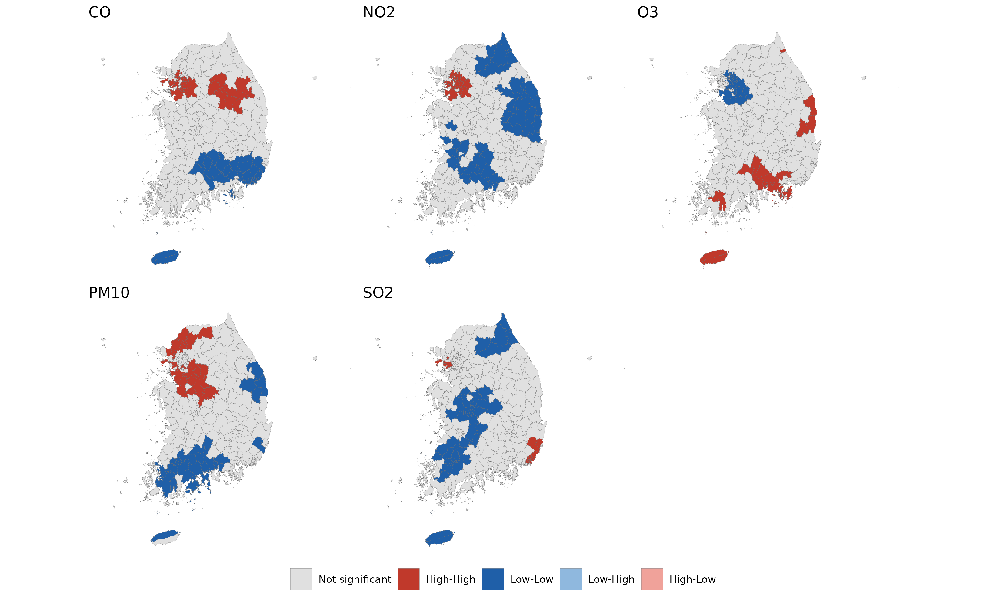

Public health and spatial epidemiology
Understanding where disease occurs, and why.
I work with spatial and spatiotemporal epidemiological methods to investigate patterns of disease, environmental exposures, and health outcomes. My research combines geographic data, statistical modelling, and public health questions.
- Spatial epidemiology
- Bayesian modelling
- Disease mapping
- R and INLA
About this portfolio. These projects show my analytical work and research experience. They are presented for academic and professional purposes and are unpublished unless otherwise indicated.
Research projects
The research questions, analytical approaches and results from my epidemiology projects.

Dengue and the Suitable Conditions Index
Climate suitability and dengue incidence in Nepal, 2022–2024.

COVID-19 incidence in Nepal
District-level clustering and determinants of COVID-19 incidence across 77 districts.

Pneumonia mortality in Korea
Municipality-level spatial risk and a 2015–2019 spatiotemporal extension.

Suicide mortality in Korea, 2010–2021
Nationwide spatiotemporal analysis stratified by age: all ages, under 65, and 65+.

Air pollution and mortality under 65
Long-term pollutant exposure and cardiovascular, cerebrovascular, and pneumonia deaths.
Methods and skills
Methods used across my spatial and epidemiological analyses.
Spatial statistics
Global spatial autocorrelation, Moran’s I, local hotspot analysis, choropleth mapping, and geographic data preparation.
Statistical modelling
Negative binomial regression, Bayesian hierarchical models, BYM, ICAR, and relative-risk estimation.
Tools and workflow
R, R-INLA, QGIS, ArcGIS, spatial data workflows, model diagnostics, data visualisation, and reproducible analysis.
From data to public health insight
My work focuses on identifying geographic patterns in disease and investigating how population, environmental, and socioeconomic factors are associated with health outcomes. I use spatial analysis to help make these patterns more visible and interpretable.